| Download |
|---|
| WAN gateway multi-master example |
This WAN Gateway example includes PU folders with configuration files for a Multi-Master topology that includes 3 sites: DE, RU, and US. Each site has an independent cluster and a gateway.
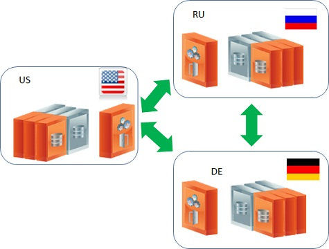
You will find folders for the following PUs:
The internal architecture of the setup includes a clustered space and a gateway, where each gateway includes a delegator and a sink:
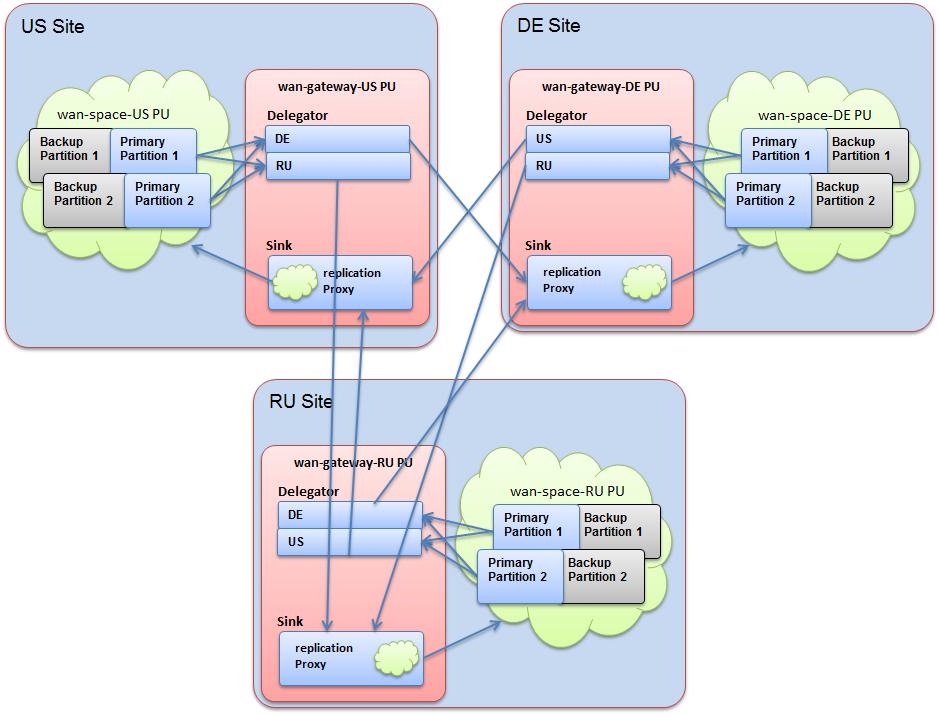
Download the example. It includes two folders: deploy and scripts.
Copy the contents of the deploy folder to the
Directory of D:scripts folder and edit the setExampleEnv.bat/sh to include the machine IP address for the NIC_ADDR, and the GigaSpaces root folder location for The scripts folder contains scripts that are used to start the Grid Service Agent for each site, along with a deploy script for all sites. This allows you to run the entire setup on one machine to test. Here are the steps to run the example:
startAgent-DE.bat/sh to start the DE site.startAgent-RU.bat/sh to start the RU site.startAgent-US.bat/sh to start the US site.deployAll.bat/sh file to deploy all the PUs listed above.After deployment, make sure you enable the relevant groups via the GigaSpaces Management Center:
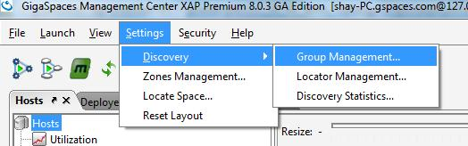
Check all the groups:
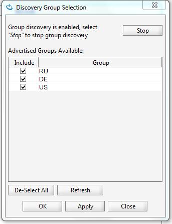
They should look like this:
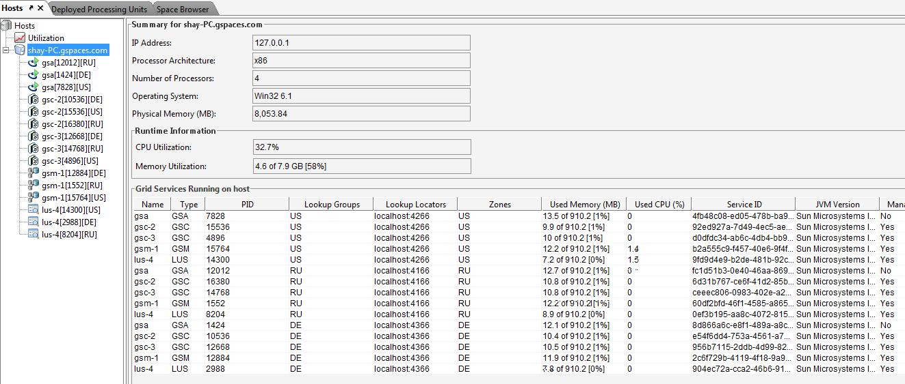
After being deployed successfully, you should see this:
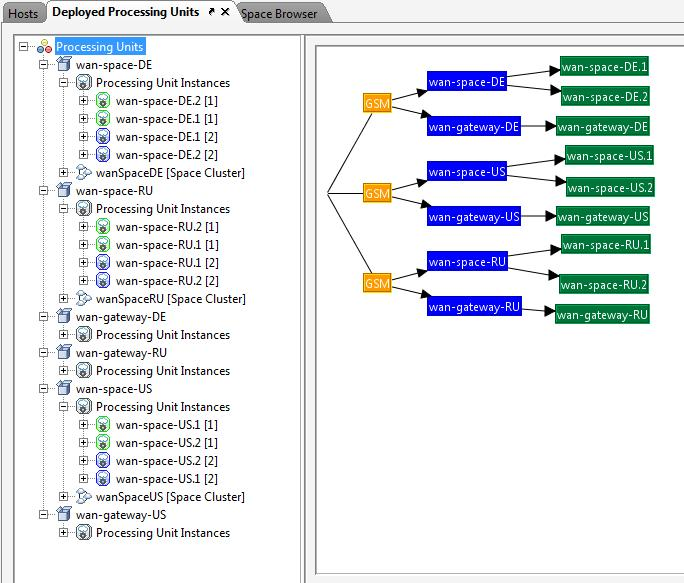
You can test the setup using the benchmark utility that comes with the GigaSpaces Management Center. Move one of the Clusters Benchmark icons and click the Start button:
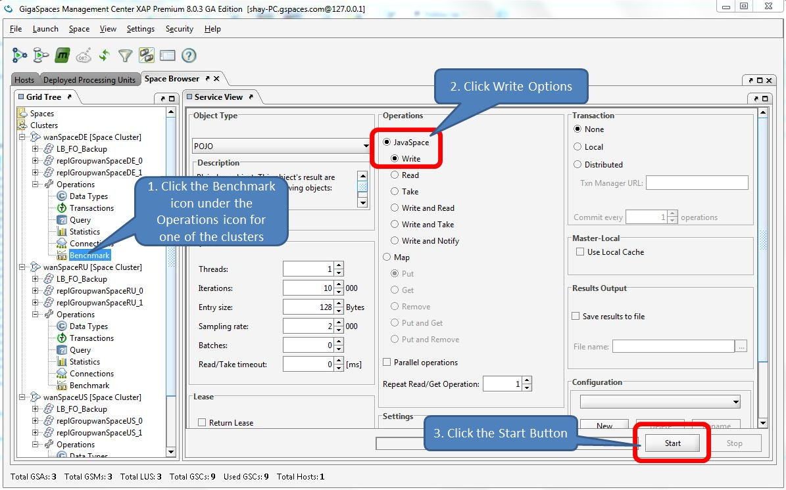
To view all of the Spaces' Object Count across all clusters, click the Spaces icon in the Space Browser tab. You should see the identical number of objects (5000) for all members:
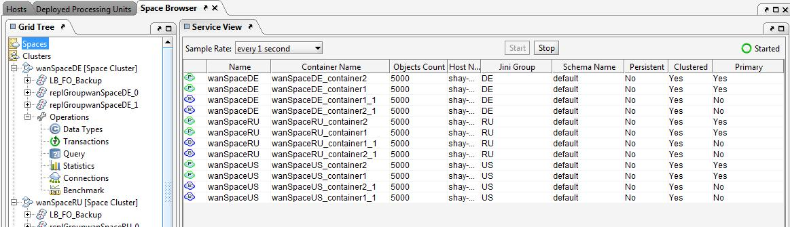
You can remove objects from each Space cluster by selecting Take operation and clicking Start:
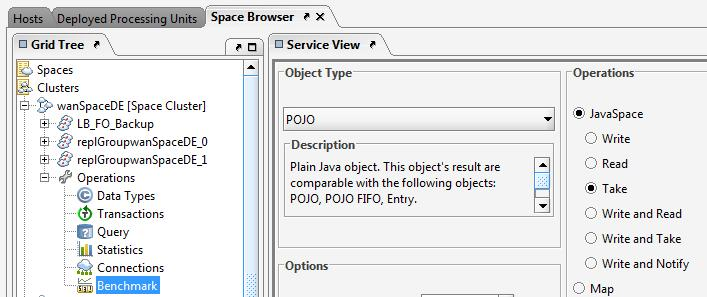
You will see the object count change to zero for each Space:
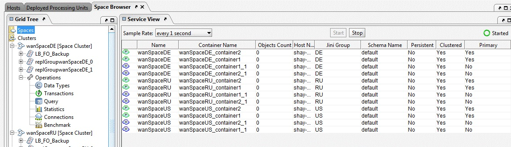
The total throughput a gateway can push to remote sites depends on the following criteria:
The total throughput is calculated as follows:
Total TP = (Partition TP X Partitions count X Distribution X Network Speed)+ Replication Meta data size / Replication Frequency
If there are 10 data grid partitions, each sending 5000 objects/sec of size 1K to the gateway, with a replication frequency of 10 replication cycles/sec (100 ms delay between each replication cycle, i.e. 1000 operations per batch), with even distribution (1) and a network speed between sites of 10 requests/sec (i.e. 100 ms latency), the total is (10 X 5000 X 1 X 10) / 10 = 50,000 objects per second = 50 M per second. The above assumes the network bandwidth is larger than 50M.
The following benchmark inlcludes 2 sites; one located on the US East coast (EC2 region) and another one located in the EC2 EU Ireland region. The latency between the sites is 95 ms and the maximum bandwidth measured is 12 MByte/sec.
A client application located on the US East coast (EC2 region), running multiple threads, performs continuous write operations to a clustered Space in the same region. The Space cluster in the US East coast EC2 region has a WAN Gateway configured, replicating data to a clustered sSpace running in the EC2 EU Ireland region via a gateway running in the same region.
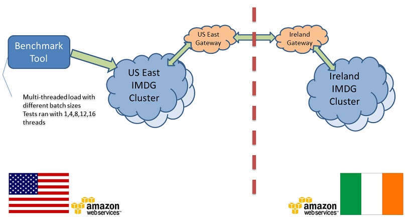
Blue line - The amount of data generated at the source site (EC2 EU East coast region) by the client application.
Green line- The amount of consumed bandwidth is measured at the target site (EC2 EU Ireland region).
Red line - The network bandwidth.
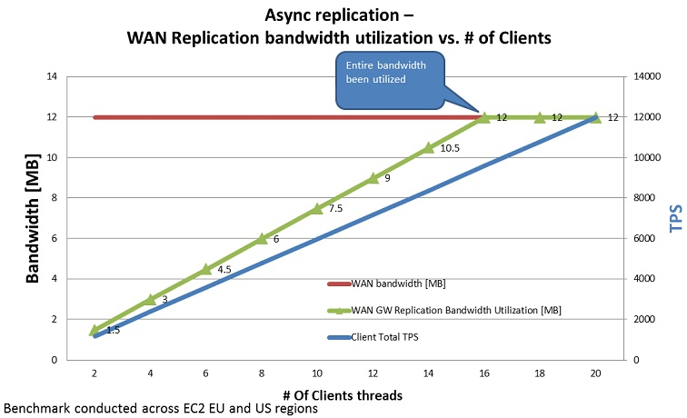
Up to 16 client threads in the client application, the utilized bandwidth at the target site is increasing. After the maximum bandwidth has been consumed, no matter how many client threads write data to the source Space, the target site bandwidth consumption will stay the same.
We see some difference between the amount of data generated and replicated at the source site, and the amount of bandwidth consumed at the target site. This difference is due to the overhead associated with the replicated data over the WAN and the network latency. For each replicated packet, some metadata is added that includes information about the order of the packet, its source location, etc.